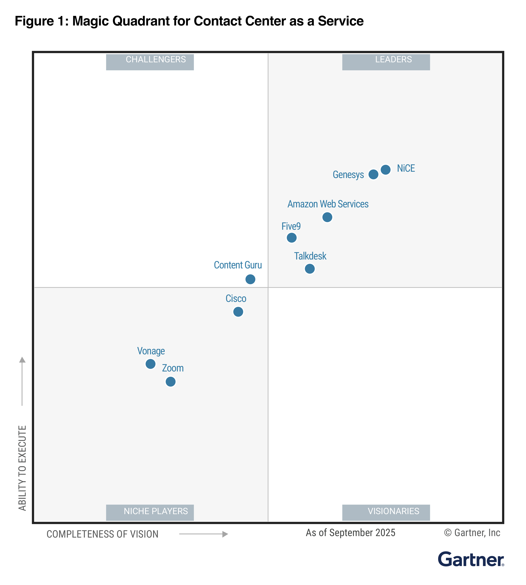

Tác giả: Lucie Baldwin | Ngày 10/09/2025 | Phân loại: Announcements, Foundational (100), Thought Leadership | Permalink
Gartner, một công ty cung cấp các thông tin khách quan, có tính thực tiễn cho các lãnh đạo và đội ngũ của họ, đã công bố 2025 Gartner Magic Quadrant for Contact Center as a Service (CCaaS). Amazon Web Services (AWS) được công nhận là một Leader cho Amazon Connect, giải pháp trải nghiệm khách hàng được trang bị AI và cloud-native của chúng tôi.
Amazon Connect được xây dựng trên cùng công nghệ hỗ trợ hoạt động dịch vụ khách hàng nội bộ của Amazon.com, mang đến các khả năng dựa trên AI trên mọi điểm tiếp xúc với khách hàng. Kể từ khi ra đời, Amazon Connect được thiết kế ưu tiên đám mây và ứng dụng AI, mang đến cho tổ chức sự linh hoạt và khả năng mở rộng ở cấp doanh nghiệp.
Là Leader trong ba năm liên tiếp, chúng tôi tin rằng vị trí này phản ánh sự đổi mới không ngừng của AWS. Bằng cách tích hợp AI vào toàn bộ hành trình của khách hàng, Amazon Connect giúp các doanh nghiệp nâng cao chất lượng dịch vụ đồng thời tối ưu chi phí vận hành thông qua mô hình định giá linh hoạt, trả theo mức sử dụng (pay-as-you-go). Với Amazon Connect, các tổ chức có thể nhanh chóng điều chỉnh chiến lược trải nghiệm khách hàng, tận dụng AI tiên tiến để thúc đẩy giá trị thương hiệu khác biệt và gia tăng lòng trung thành của khách hàng. Theo quan điểm của chúng tôi, sự công nhận này củng cố niềm tin rằng Amazon Connect đang làm cách mạng hóa cách các doanh nghiệp tương tác với khách hàng, thiết lập các tiêu chuẩn mới cho dịch vụ khách hàng hiệu quả, cá nhân hóa và thông minh.

Theo Gartner, AWS là một Leader CCaaS nhờ vào Khả năng thực thi (Ability to Execute) và Tầm nhìn toàn diện (Completeness of Vision). Kể từ báo cáo Magic Quadrant trước đó, chúng tôi đã tập trung loại bỏ các rào cản cho việc áp dụng AI bằng cách cung cấp AI chính hãng (first-party AI) trên tất cả các kênh với giá dựa trên mức sử dụng kênh thay vì dựa trên mức tiêu thụ AI. Khách hàng như Virgin Media O2 đã đạt được những kết quả đáng kể, bao gồm rút ngắn thời gian giải quyết khiếu nại, điểm NPS cao hơn và giảm thời gian xử lý, trong khi Fujitsu báo cáo độ chính xác hơn 96% trong dự báo nội phiên và tăng 15% hiệu quả trong kiểm soát chất lượng.
Báo cáo của Gartner cung cấp những hướng dẫn chuyên sâu khi bạn đánh giá giải pháp trung tâm liên lạc đám mây phù hợp cho doanh nghiệp của bạn. Truy cập bản sao miễn phí của báo cáo 2025 Gartner Magic Quadrant for CCaaS tại đây.
Để tìm hiểu thêm về Amazon Connect, hãy truy cập Amazon Connect page.
Sẵn sàng chuyển đổi trải nghiệm dịch vụ khách hàng với Amazon Connect? Liên hệ với chúng tôi.
Biểu đồ này được xuất bản bởi Gartner, Inc. như một phần của tài liệu nghiên cứu lớn hơn và nên được đánh giá trong bối cảnh của toàn bộ tài liệu. Tài liệu Gartner có sẵn thông qua yêu cầu từ AWS.
GARTNER là nhãn hiệu đã đăng ký và nhãn hiệu dịch vụ của Gartner, Magic Quadrant là nhãn hiệu đã đăng ký của Gartner, Inc. và/hoặc các công ty liên kết tại Hoa Kỳ và quốc tế và được sử dụng ở đây với sự cho phép. Mọi quyền được bảo lưu. Gartner không ủng hộ bất kỳ nhà cung cấp, sản phẩm hay dịch vụ nào được mô tả trong các ấn phẩm nghiên cứu của mình và không khuyến nghị người dùng công nghệ chỉ lựa chọn những nhà cung cấp có xếp hạng cao nhất hoặc chỉ định khác. Các ấn phẩm nghiên cứu của Gartner bao gồm quan điểm của tổ chức nghiên cứu của Gartner và không nên được hiểu là các tuyên bố thực tế. Gartner từ chối mọi bảo đảm, dù rõ ràng hoặc ngụ ý, đối với nghiên cứu này, bao gồm bất kỳ bảo đảm nào về khả năng thương mại hoặc tính phù hợp cho một mục đích cụ thể.
Getting Started
Amazon Connect User Guide
Amazon Connect Admin Guide
Amazon Connect Streams API
Amazon Connect Partners